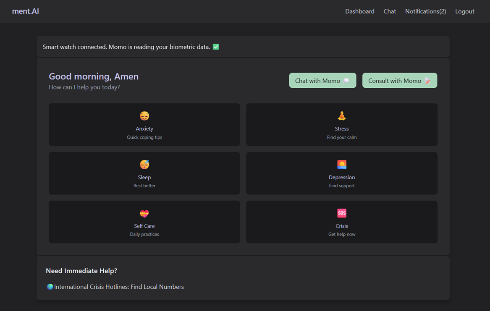
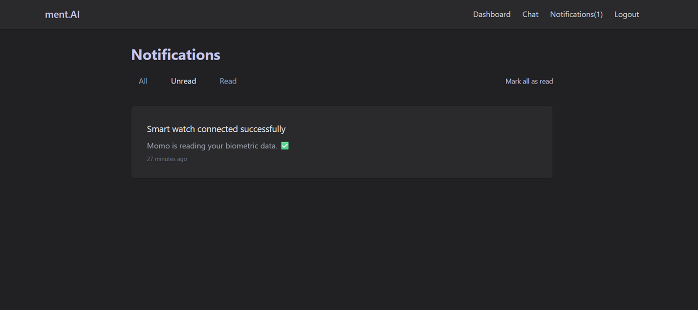
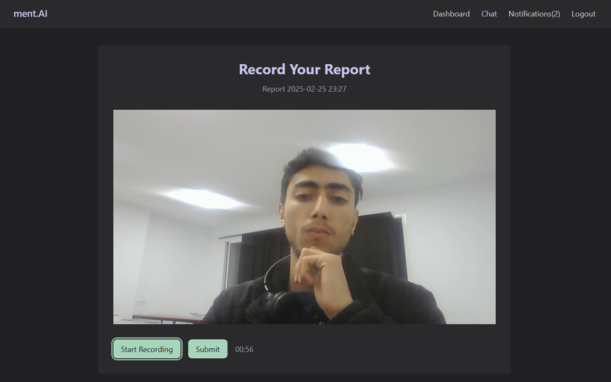
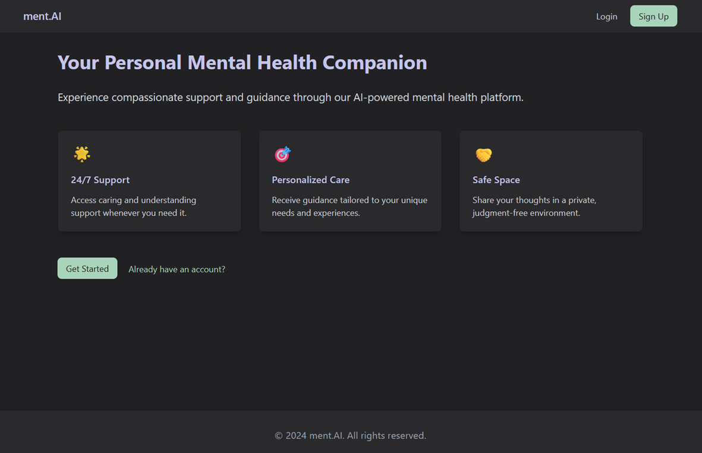
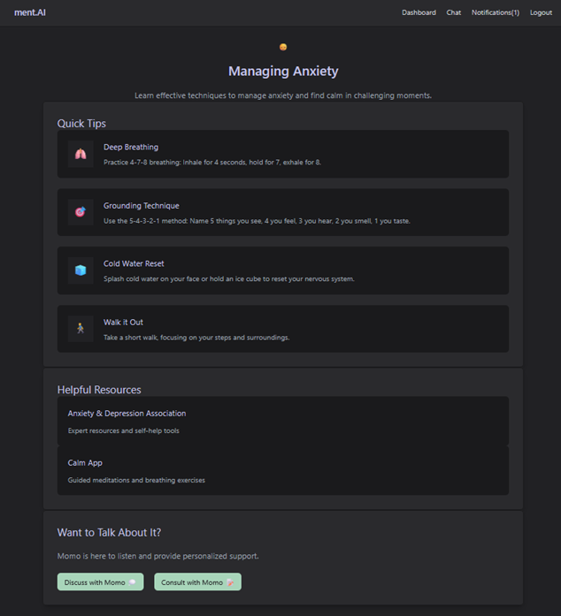
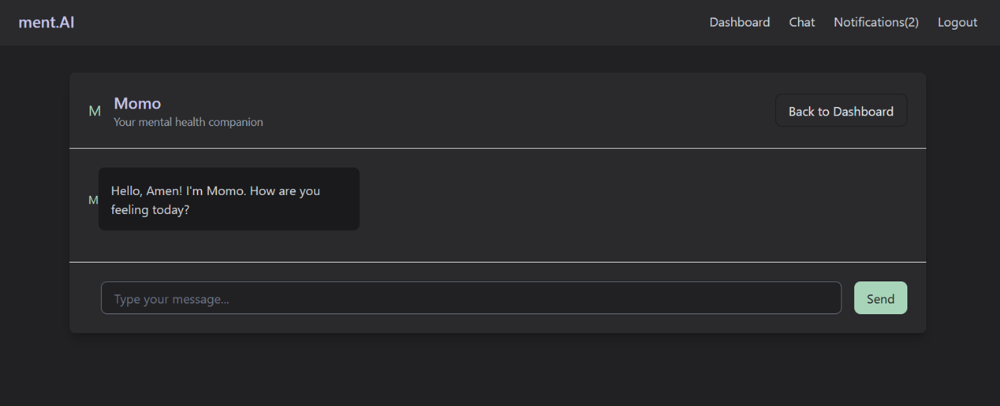
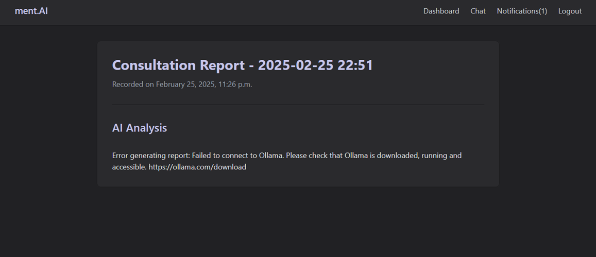

MentAI
Links
Project Description
mentAI was a project I worked on for the EMBS competition hosted by IEEE as part of the TSYP initiative. It’s a web application designed to be a personalized AI mental health companion and assistant, and I was lucky to be part of such an incredible team (Gaith Fdaoui, L'Aljane Med Amine, and Mohamed Amine Abid)
My main contribution was developing the entire web app. I used Django for the back-end, HTMX and Tailwind for the front-end. It was a big challenge, but I loved every bit of it. On top of that, I also helped integrate several of the AI models we developed as a team, which was one of the coolest parts of the project.

I didn’t just focus on the web app though. I also helped with developing some of the AI models. We used LangChain and a multi-agent approach. This approach allowed us to create a more natural and engaging conversation experience, which is crusial for a mental health assistant LLM.
As for the app itself, I’m pretty proud of how the UI and UX turned out. The core feature of the app is “Momo,” an AI companion that you can chat with, either about general things or specific topics you’re struggling with. One of the coolest parts is that the app connects to a smartwatch, reading biometric data to send you notifications when it detects anything unusual, which is powered by AI as well.

You can also record video sessions where you talk about what’s on your mind, and Momo will analyze the video, transcribe it, and even assess your facial expressions. Afterward, it sends you a report with suggestions and feedback. I really believe the combination of AI, biometric data, and video analysis gives users a personalized experience that’s hard to find elsewhere.

All in all, working on mentAI was an amazing experience. It pushed me to learn and grow in ways I hadn’t imagined, and I’m proud of what we accomplished as a team.
Screenshots



